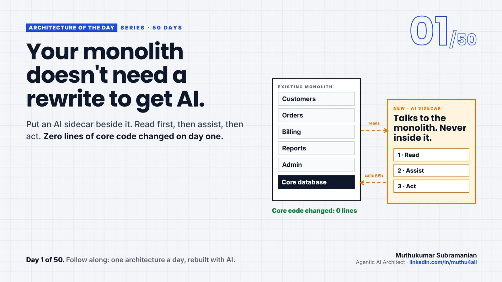

Your Monolith Doesn't Need a Rewrite to Get AI
By Muthukumar Subramanian · Agentic AI Architect

The most expensive sentence in enterprise AI is:
"Let's modernise the monolith first. Then we'll add AI."
That sentence has delayed more AI projects than any model limitation ever did. The migration takes two years, the budget gets cut in year one, and the AI never arrives.
Here's the uncomfortable truth: your 15-year-old monolith is not the problem. It's full of exactly what AI needs: real data, real rules, real history. You don't need to rewrite it. You need to put something beside it.
This is Day 1 of Architecture of the Day, a 50-day series in which I take one architecture each day and show how AI and agents change it. We start with the one most companies actually run.
The architecture today
One big application. Customers, orders, billing, reports and admin, all in one codebase, on one core database. It's slow to change, scary to touch, and it still runs the business every single day.
Where AI plugs in now: the AI sidecar
Don't put AI inside the monolith. Put it next to it.
The AI sidecar is a separate service that:
→ Reads from a read replica of the database, never the live core
→ Searches documents, tickets and records through a search and vector index
→ Calls the monolith's existing APIs as tools when it needs to act
→ Shows up as one small "Ask" panel in the existing UI
The core code doesn't change on day one. Not one line.
👉 [IMAGE: A-day01-2-in-article-architecture.png]
Caption: The AI sidecar pattern. Grey is what you already have. Amber is new.
The rollout that actually works: Read, then Assist, then Act
Level 1, Read. The AI only answers questions. "Why was invoice 4471 ₹500 higher?" It reads the history and replies with the source. Risk: low.
Level 2, Assist. The AI drafts the reply, the refund form or the next action. A person reviews it and clicks send. Risk: medium.
Level 3, Act. The AI calls existing APIs to waive a fee or reschedule a delivery, within limits and with approvals and an audit trail. Risk: higher, so it comes last.
Each level earns the trust for the next one. Skip straight to "Act" and the first mistake ends the project.
👉 [IMAGE: A-day01-3-in-article-read-assist-act.png]
Caption: Read, then assist, then act. In that order.
Watch it work
Same question, three levels, core code untouched, and everything logged.
👉 [GIF: A-day01-4-in-article-three-levels.gif]
Caption: AI in a monolith, three levels. Zero lines of core code changed.
Where it's heading with agents
Once the sidecar exists, something interesting happens. Each existing API becomes a tool that agents can use, exposed once through a standard like MCP. New features start getting built as agent workflows on top of the monolith instead of inside it.
Over time the monolith quietly becomes the system of record, and the agents become the system of work. That's modernisation without the big-bang rewrite.
Pros
→ Value in weeks, not after a two-year migration
→ No risk to the core: the sidecar can be switched off
→ Model-neutral: swap OpenAI, Claude, Gemini or an open model behind one gateway
Cons
→ Read replicas and indexes add some infrastructure cost
→ The old APIs may be messy, so wrapping them cleanly takes effort
→ Without governance it becomes "shadow AI" with a nicer UI
The opportunity
There are millions of business applications nobody will ever rewrite: in banks, insurers, hospitals, manufacturers and government. Every one of them is a candidate for an AI sidecar.
That's a huge services and product market: AI retrofits for systems that aren't going anywhere. The firms that learn to do this safely and repeatably will be very busy for the next five years.
Tools to try
OpenAI API or Azure OpenAI · Claude API · Gemini · pgvector or Azure AI Search for the index · an MCP server to wrap existing APIs · Copilot Studio connectors for Microsoft-heavy shops.
Your turn 👇
Rewrite the monolith first, or put the sidecar in now? Pick one and tell me why.
And if you know someone who keeps saying "after the migration", tag them. They need this more than anyone.
Day 1 of 50. Follow me so you don't miss tomorrow's: Layered architecture, and the AI layer nobody planned for.